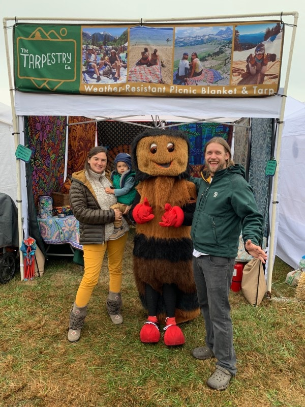

Community Spotlight: 31st Annual Wooly Worm Festival
Realton welcomes you and your family to the 31st Annual Wooly Worm Festival. Join us for woolly-worm themed fun, games, educational activities, and live perfomances from local artists. All proceeds raised by the Wooly Worm Festival are distributed to local community causes.
Featured Activities
- Arts and Crafts
- Woolly Worm Racing
- Trivia Time
- Live Entertainment
- Silent Auction
Attendee Tips
- Bring a poncho. Weather this time of year is unpredictable.
- Arrive early. Free parking is limited, as are woolly worm racing slots!
- Midday arts-and-crafts. Beat the heat by stopping in one of the crafting tents!
- Study up. JJ Miller gives out prizes for correct trivia answers.
Photo Opportunities
